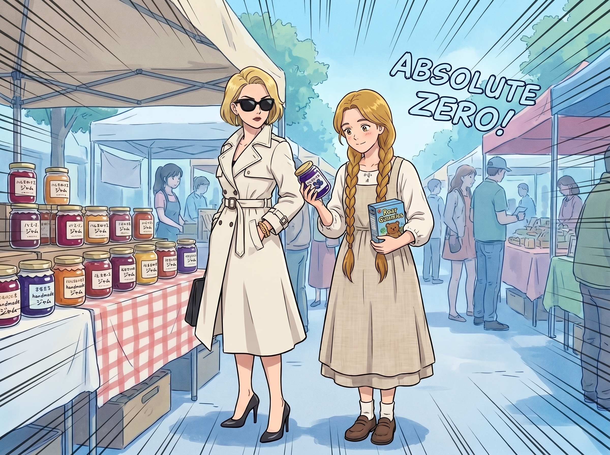
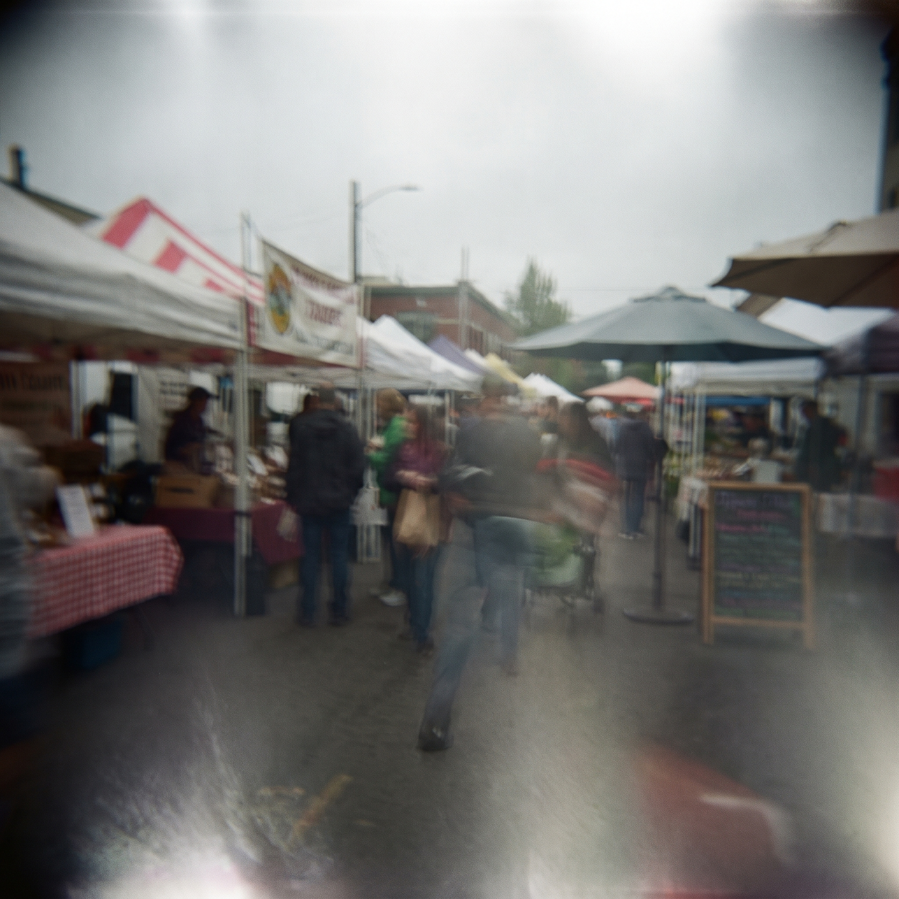
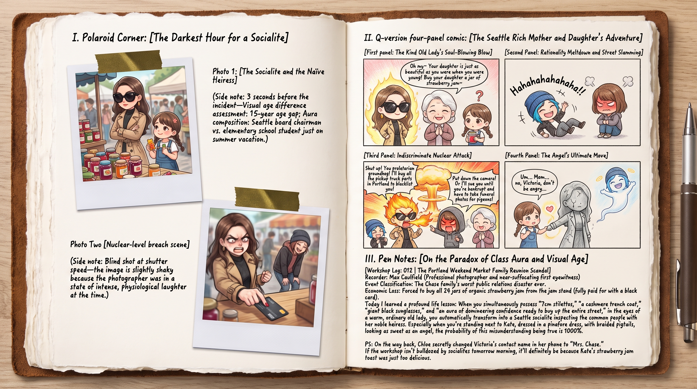

令千金風波



波特蘭週末市集的手工果醬攤位前，空氣在一瞬間凝固成了絕對零度。
今天的 Victoria 穿著一件剪裁極其凌厲的米白色羊絨風衣，腳踩七公分細高跟，臉上架著一副幾乎遮住半張臉的巨型消光黑大墨鏡，手腕上晃著卡地亞金手鐲，整個人散發著一種「剛從西雅圖董事會下來視察民間資產」的三十歲幹練女總裁/豪門名媛氣場。
而站在她身旁、正微微仰著頭認真挑選藍莓果醬的 Kate，穿著寬鬆的亞麻背帶裙，金褐色長髮編成溫柔的雙麻花辮垂在胸前，懷裡還抱著一盒小熊形狀的草莓軟糖，純淨無辜得像個剛放暑假的小學生。
一、毀滅性的誤會與地獄級發言
熱情的果醬攤主是一位慈祥的白髮老太太。老太太看著 Kate 乖巧的模樣，又看了看氣場威嚴、正在用指尖優雅翻看成分表的 Victoria，臉上頓時堆滿了無比溫暖的祖母級笑容：
「哎呀，這位女士，您可真有福氣！您女兒長得太漂亮、太乖巧了，跟您年輕時候簡直一個模子刻出來的！這罐低糖的有機草莓醬最適合給小朋友拌優格了，要不要買一罐給令千金嚐嚐？」
整個攤位周圍三米內的空氣瞬間被抽乾。
二、另外兩人的極限忍笑與瞬間破功
Max 整張臉瞬間憋成了醬紫色。她死死咬住下嘴唇，雙手用力掐著自己的大腿肉，整個人縮在連帽衛衣裡像篩子一樣劇烈顫抖。她試圖舉起相機假裝拍風景，但抖動的手指讓快門一口氣盲拍了二十多張全是虛影的廢片。
Chloe 根本沒有任何名媛包袱。在愣了半秒後，她直接一巴掌狠狠拍在旁邊的木頭柱子上，爆發出一陣響徹整條街的放肆狂笑：「哈哈哈哈哈哈哈哈哈！！！女兒？！Victoria 媽媽！Chase 夫人！您今年貴庚啊？！您是十八歲生了個同齡的十九歲天使千金嗎？！」
Chloe 笑得整個人直接蹲在地上，抱著膝蓋差點在鵝卵石地面上打滾，眼淚都飆了出來。
三、名媛的墨鏡摘落與全方位無差別地圖炮
Victoria 的臉色在短短三秒內，經歷了由白轉青、由青轉黑、最後直接暴變成核爆般的赤紅。
「啪嗒」一聲，她用兩根青筋暴起的手指，一把將那副巨大的墨鏡扯了下來，開啟了她人生中最恐怖的全屏無差別打擊：
「閉嘴！Price 你這隻只會犬吠的無產階級土撥鼠！再敢從那張滿是機油的嘴裡吐出一個『媽』字，明天早上你一睜眼就會發現波特蘭所有的道奇皮卡零件店全被 Chase 家族收購並將你列入終身黑名單！」
罵完 Chloe，Victoria 猛地轉向快要把自己咬出血的 Max：「還有妳，Caulfield！把妳那台該死的復古相機給我放下！要是敢讓任何一張照片流進妳那本愚蠢的手帳裡，我就以侵犯肖像權起訴妳到破產！」
最後，名媛轉過身，胸口劇烈起伏地盯著一臉懵懂的果醬攤主老太太，咬牙切齒地從牙縫裡擠出冷冽的字句：「還有，這位視力顯然需要立刻去全美頂級眼科中心進行角膜置換的女士——本小姐今年十九歲！十九！不是三十九！更沒有無性繁殖出一個天使！！」
四、Kate 的溫柔補刀與絕殺
被吼得一愣一愣的老太太眨了眨眼，顯然被這個年輕女孩的火氣嚇到了。
這時，一直乖乖站在旁邊、手裡還捧著試吃小木勺的 Kate 眨了眨那雙純淨無瑕的大眼睛。她看了看氣得快要昏厥的 Victoria，又看了看驚慌的老太太，非常善解人意地走上前，伸出軟綿綿的小手輕輕拉了拉 Victoria 風衣的衣角，用全街區最溫柔、最無辜的聲音小聲說：
「那個……媽……啊不對，Victoria……不要生氣了，這位老奶奶只是在誇妳看起來很有成熟可靠的氣質呢……」
「噗——！！！」
蹲在地上的 Chloe 聽到那聲差點脫口而出的「媽」，直接笑抽過去，頭頂狠狠撞在身後的木樁上；Max 終於徹底破功，整個人埋進 Chloe 的後背笑得直不起腰。
「Marsh！！！連妳也跟著她們學壞了是不是？！」
Victoria 抓狂地揉著太陽穴，精緻的高跟鞋在地面上踩得咚咚作響。她一把掏出黑卡拍在攤位上：「把你們這攤位上所有的有機果醬全給我包起來！現在！立刻！然後我們馬上離開這個該死的街區！！」
波特蘭午後明媚的陽光下，名媛提著大包小包氣急敗壞地走在最前面，身後跟著笑得擦眼淚的機械師、狂按快門的攝影師，以及小口吃著草莓果醬、眼神滿是無辜的長髮天使。這場關於「母女」的荒謬誤會，注定會成為二號車廂手帳裡最難以磨滅的爆笑傳奇。